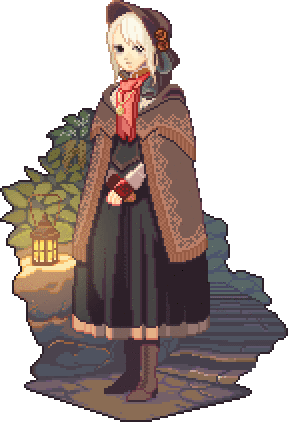
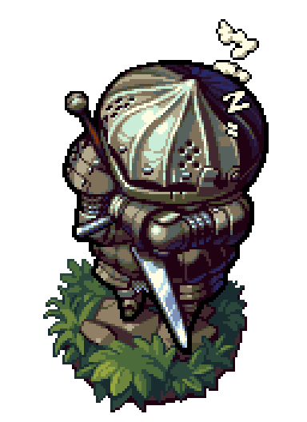

Sobre Mim
Marcos José Pimentel Salles
17 anos
Nasci 12/07/2000
mjps240@gmail.com
(37)99985-3023


Sou Marcos José Pimentel Salles, estou cursando Ciência da Computação na
UFLA e sou Trainee da Comp. Júnior. Como quase todos do meu curso, gosto de
jogos, animes e séries.
Tenho interesse em desenvolver pesquisas na área de inteligência artificial, e também em dia me tornar um desenvolvedor de aplicativos e jogos.
Tenho interesse em desenvolver pesquisas na área de inteligência artificial, e também em dia me tornar um desenvolvedor de aplicativos e jogos.
Objetivos
Entrar pra Comp. Jr., e ajudar no que for necessário
Me formar como programador
Ganhar experência para que eu possa fazer cada vez mais
Fazer ao menos um mangá, uma animação e um jogo

Qualificações

Cursei a primeira metade do Ensino Fundamental II no Colégio Dom
Belchior, depois me transferi para o Colégio Losango, onde permaneci até a
conclusão do Ensino Médio
Durante o período do início do Ensino Fundamental II até o segundo ano do Ensino Médio, fiz um curso de Inglês no CCAA.
Logo após o término do Ensino Médio, eu já me engressei na UFLA, no curso de Ciência da Computação, do qual eu sou calouro.
Durante o período do início do Ensino Fundamental II até o segundo ano do Ensino Médio, fiz um curso de Inglês no CCAA.
Logo após o término do Ensino Médio, eu já me engressei na UFLA, no curso de Ciência da Computação, do qual eu sou calouro.
Experiências
Detenho uma razoável experiência com programação em C++
Tenho um breve conhecimento de Design
Estou apendendo a programar em HTML/CSS

Curiosidades
Jogos favoritos
Skyrim
Dark Souls
Dragon Quest8
Undertale
Paladins
Mangás que gosto
Berserk
Fullmetal Alchemist
HunterXHunter
Nanatsu no Taizai
Goblin Slayer
Webtoons
Unordinary
Bastard
Tower of God
God of Highschool
Dice
Cartoons
Wakfu
Gumball
Adventure Time
Rick and Morty
Bravest Warriors